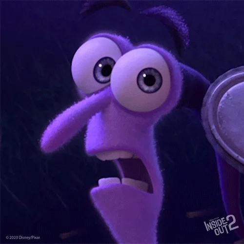

When Riley is gearing up for the big scrimmage game, we see Anxietys obsessive involvement in negatively affecting the thoughts and worries of what might happen, which prevents Riley from sleeping. Anxious thoughts can oftentimes hijack our imagination and activate our limbic system-the fear center in our brain. These thoughts can sometimes take over any other rational thought. Because of that, it can cause insomnia and doesnt allow our brain and body to truly rest. This scene was very accurate in how it represented what this can be like.

When Riley is gearing up for the big scrimmage game, we see Anxietys obsessive involvement in negatively affecting the thoughts and worries of what might happen, which prevents Riley from sleeping. Anxious thoughts can oftentimes hijack our imagination and activate our limbic system-the fear center in our brain. These thoughts can sometimes take over any other rational thought. Because of that, it can cause insomnia and doesnt allow our brain and body to truly rest. This scene was very accurate in how it represented
There is a particular scene where Anxiety is overwhelming Rileys mind that does a perfect job at explaining an anxiety attack. Anxiety or panic attacks are sadly common and up to 35% of the population experience a panic attack at some point in their lives
embrace Wellness on International Self-Care DayWe know in this day and age, that there is a mental health crisis specifically among youth. This movie, while is not going to fix it, will hopefully make youth and parents feel not so alone and that these complex emotions are a part of life. That is why its so crucial to break down the mental health stigma.
ABILITY TO RECOGNIZE EMOTIONSEveryone has fears. Some of them are very common, like spiders, heights, needles, or small spaces. Others might be unique to you. Some people find their fears interfere in their day-to-day lives
live a life COME BACK HOME!